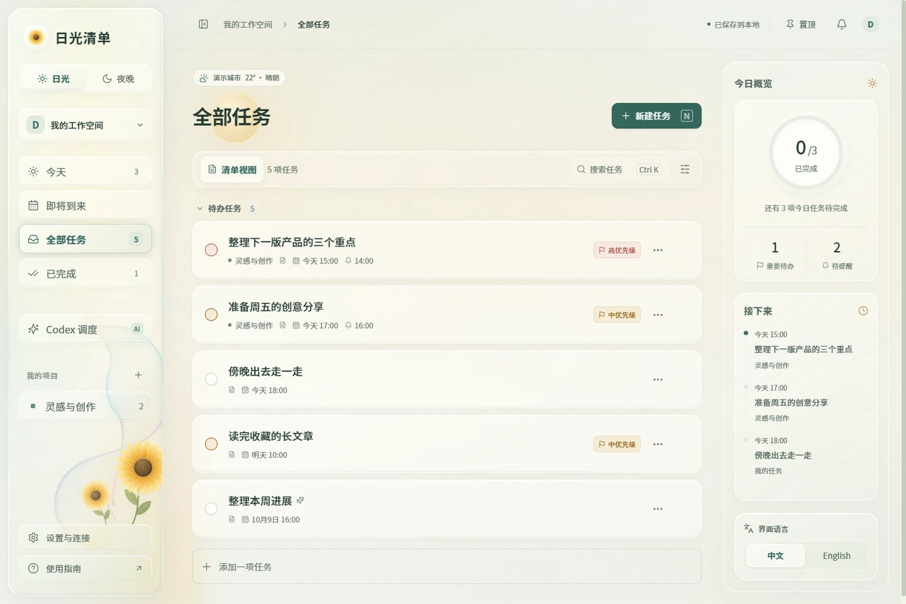

Daylight
Windows · 产品导览
中文
English
A little room for your day
你的任务，在自己的电脑里。
本地任务、轻盈提醒，以及随日夜变化的液态玻璃界面。需要时，让 Codex 接手下一步。
本地存储
Windows 桌面
Codex MCP
播放产品导览
6 个画面 · 约 45 秒
↗
01
任务与提醒
02
光线与天气
03
桌面里的细节
04
与 Codex 协作
05
每一天的开场
06
安心留在本地
这是离线产品演示。点击只切换画面与说明，不会修改任务或连接 Codex。
真实应用截图 · 示例数据

隔离的演示资料 · 天气与时间使用固定示例
放大查看 ↗
← 上一章
01 / 06
下一章
→
Daylight · 公开示例资料，不含真实用户任务。所有画面与动画均来自应用本身；本页面不是可操作的任务客户端。
关闭